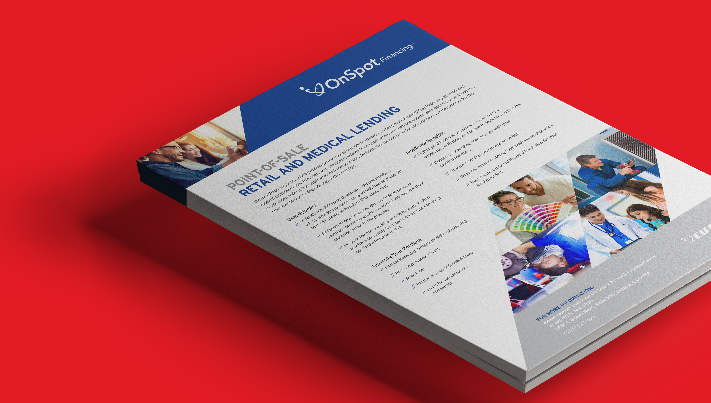
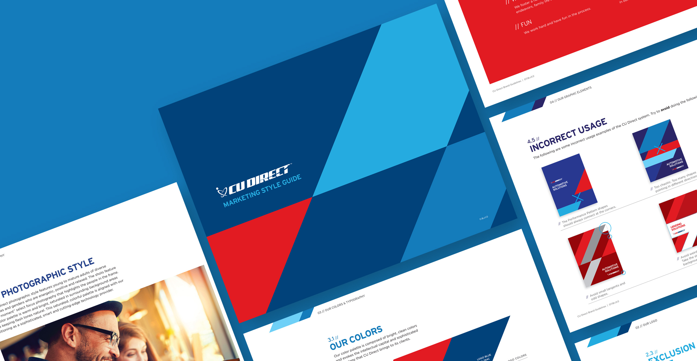
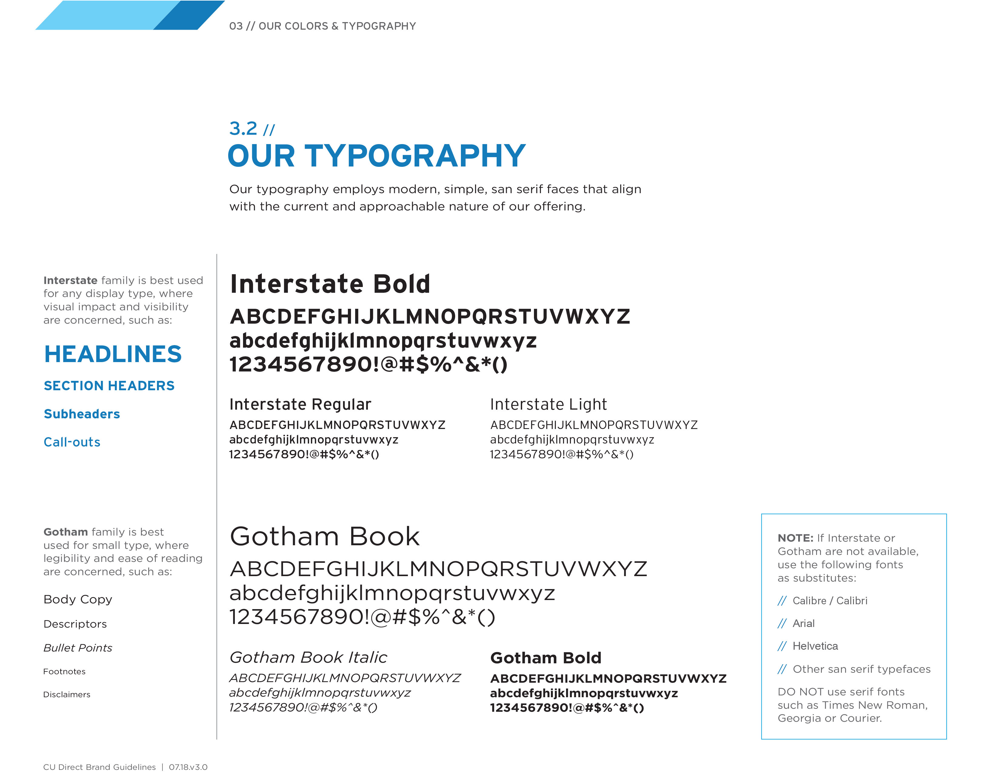
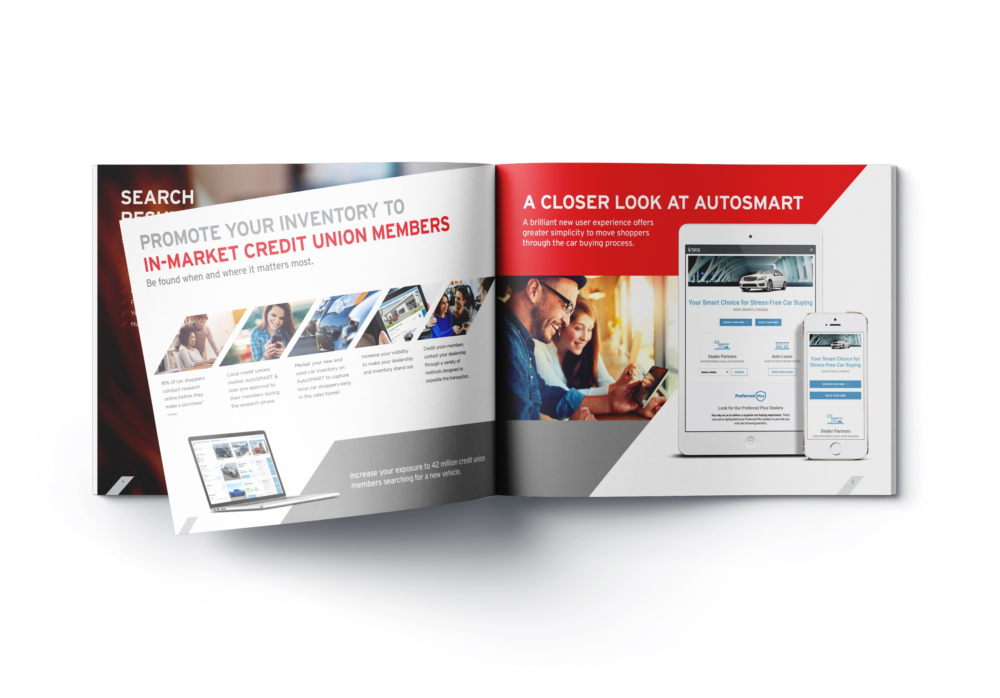
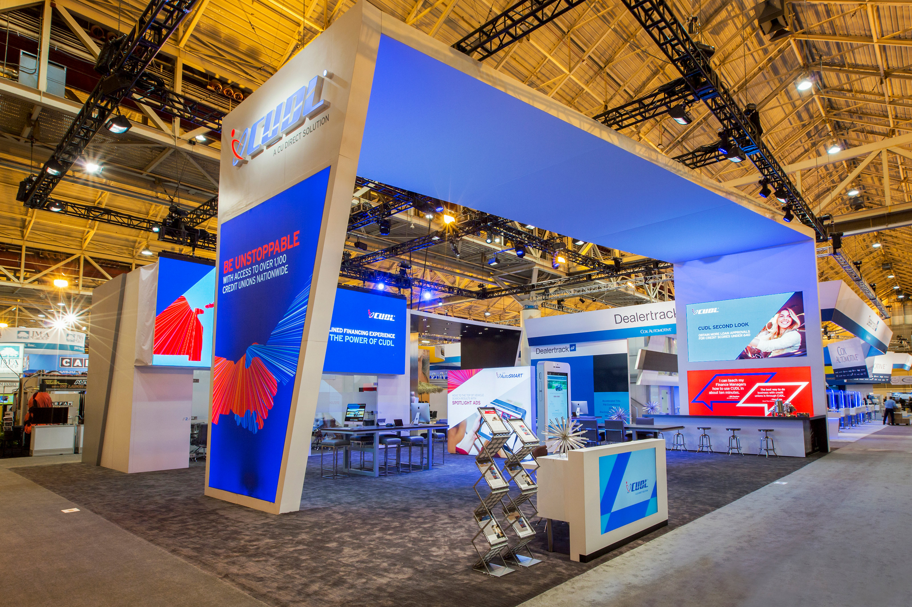

Setting a New Visual Standard for the Industry

Taking a boring industry like automotive lending and making it breathtaking was no small task. The goal was to capture the right audience and set the right tone.
At its core was an angular structure representing energy and future-forward effort, which became a repeatable visual system across brand, print, web, and environmental work.




Yearly industry conventions like NADA and GAC provided opportunities to make a statement at scale.